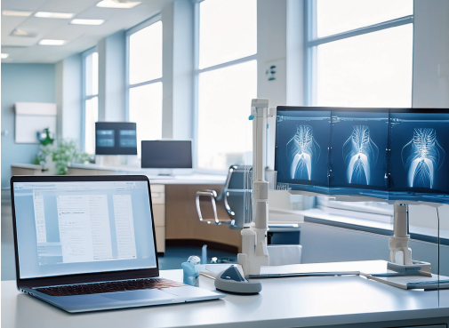

| 診療時間 | 月 | 火 | 水 | 木 | 金 | 土 | 日 |
|---|---|---|---|---|---|---|---|
| 9時〜12時 | ● | ● | ● | / | ● | ● | / |
| ● | ● | ● | ● | / | ● | / | / |
当院のコンセプト
石村内科医院は、地域の皆様の健康と生活の質の向上を目指し、内科の専門医療を提供しています。高血圧、糖尿病、脂質異常症といった生活習慣病の予防や治療を中心に、風邪やインフルエンザなどの一般的な急性疾患、さらには長期的な健康管理においても患者様を支援しています。患者様お一人おひとりのライフスタイルに合わせた治療計画を提供し、安心して健康管理をお任せいただけるよう努めています。
診療内容と取り組み
当院では、専門医の知識と経験を活かし、以下のような多岐にわたる診療を行っています。
生活習慣病の管理
高血圧、糖尿病、脂質異常症といった生活習慣病は、長期的な健康管理が必要です。石村内科医院では、最新の医療ガイドラインに基づき、薬物治療に加え、食事指導や生活習慣改善のアドバイスを行い、患者様の健康リスクを低減することに努めています。
定期健康診断と予防医療
健康状態を定期的に把握することは、生活習慣病やその他の疾患の早期発見につながります。石村内科医院では、健康診断や定期的なチェックアップを通じて、予防医療に力を入れています。早期発見・早期治療が重要な疾患も多いため、リスクの高い方には検査の実施や生活習慣の見直しをおすすめしています。
一般内科診療
風邪やインフルエンザ、胃腸の不調、頭痛などの一般的な症状についても、患者様が安心して受診できる体制を整えています。必要に応じて専門医との連携も行い、適切な治療を迅速に提供します。
当院の設備に関して
石村内科医院は、患者様に質の高い医療を提供するため、最新の医療機器と設備を完備しています。心臓や血圧、糖尿病などの内科的な診断・治療を迅速かつ的確に行うために、高精度な診断機器を備えています。心電図検査や血圧モニタリングを行う装置をはじめ、超音波検査機やX線撮影装置を導入し、体の内部構造を詳細に把握することで、精密な診断が可能です。
また、石村内科医院では、院内感染予防のため、清潔で衛生的な環境の維持に努めています。各診察室や待合室には空気清浄機を設置し、常に換気と空気の清浄化を行うことで、患者様が安心して受診できるよう配慮しています。さらに、院内での電子カルテシステムの導入により、患者様の診療履歴を迅速かつ正確に管理し、医療の質を向上させています。
検査設備に加えて、点滴治療や採血などの処置室も備え、緊急の処置にも対応可能です。点滴を行う際のベッドスペースも広く、リラックスして治療を受けていただけるよう工夫されています。患者様一人ひとりの症状やニーズに応じた治療が行えるよう、医師とスタッフが連携してサポートし、細やかな医療サービスを提供しております。
石村内科医院は、地域の皆様の健康管理と予防医療に貢献することを目指し、常に最新の医療知識と設備を取り入れながら、患者様に寄り添った医療を提供してまいります。
診療内容
患者様の生活環境に配慮、最適な治療計画を。
一般内科診療
風邪やインフルエンザ、胃腸の不調、頭痛、発熱などの急性疾患から、生活習慣病や慢性的な疾患まで幅広く対応しています。診察では、まず患者様の症状や問診票の内容を確認し、必要に応じて血液検査や尿検査を行うことで、原因の特定や重症度を把握します。体調不良の原因を総合的に評価し、早期回復を目指した適切な治療を提供しています。
生活習慣病の治療・管理
高血圧や糖尿病、高脂血症など、生活習慣病の治療と管理を行います。定期的な血圧測定や血液検査を通じて、患者様の健康状態を確認し、生活習慣の改善指導や薬物治療を行います。また、食事や運動の指導を通じて、患者様が日常生活で管理できるようサポートします。特に、糖尿病患者様向けには、血糖値測定や食事療法、運動指導など、総合的なケアを提供しています。

消化器系疾患の診察
胃痛や腹痛、便秘、下痢などの消化器系の症状に対して、消化器内科的な診察を行っています。必要に応じて、血液検査や超音波検査、便潜血検査などを実施し、消化器系疾患の早期発見と治療に努めています。また、胃腸の健康管理や予防指導も行い、日常生活に役立つアドバイスを提供しています。
呼吸器系疾患の診察
咳や息切れ、呼吸困難などの呼吸器系の症状に対しても、専門的な診察を行っています。喘息や慢性閉塞性肺疾患（COPD）など、呼吸器疾患の診断・治療に加え、感染症の予防や、季節性の風邪や花粉症に関するアドバイスも行います。呼吸器系の状態を総合的に評価し、必要に応じて吸入薬や内服薬などの治療を提供しています。
| 診療時間 | 月 | 火 | 水 | 木 | 金 | 土 | 日 |
|---|---|---|---|---|---|---|---|
| 9時〜12時 | ● | ● | ● | / | ● | ● | / |
| ● | ● | ● | ● | / | ● | / | / |
医師紹介
患者様の生活環境に配慮、最適な治療計画を。

石村 吾郎 医師（院長）
専門分野 | 内科、消化器内科
経歴 |
東京大学医学部卒業後、東京大学病院の内科に勤務。消化器系疾患に関する専門知識と豊富な臨床経験を積んだ後、地域医療に貢献したいとの思いから石村内科医院を開業。30年以上にわたり、地域の皆様に信頼される医療を提供してきました。
資格 | 日本内科学会認定医、日本消化器病学会専門医
コメント |
患者様に寄り添い、安心できる医療の提供を目指しています。
佐藤 美咲 医師
専門分野 | 内科、糖尿病治療
経歴 |
慶應義塾大学医学部を卒業後、慶應義塾大学病院での勤務を経て、糖尿病治療の分野で多くの経験を積みました。糖尿病患者の生活指導や血糖値管理を得意とし、最新の治療法にも積極的に取り組んでいます。石村内科医院には約10年前に着任し、患者様の生活習慣改善や合併症の予防に力を入れています。
資格 | 日本糖尿病学会専門医、日本内科学会総合内科専門医
コメント |
患者様の健康を支え、生活の質を向上させるお手伝いをさせていただきます。
中村 健吾 医師
専門分野 | 内科、消化器内科
経歴 |
名古屋大学医学部を卒業後、名古屋大学病院にて呼吸器内科の研鑽を積む。その後、アレルギー疾患や喘息など、呼吸器の治療を専門とする病院で経験を積み、石村内科医院に着任。特にアレルギー性疾患や季節性の呼吸器疾患の治療と予防に力を入れています。
資格 | 日本呼吸器学会専門医、日本アレルギー学会専門医
コメント | 患者様の症状に合った丁寧な診療を心掛けています。
田中 一郎 医師
専門分野 | 呼吸器内科、アレルギー治療
経歴 |
名古屋大学医学部を卒業後、名古屋大学病院にて呼吸器内科の研鑽を積む。その後、アレルギー疾患や喘息など、呼吸器の治療を専門とする病院で経験を積み、石村内科医院に着任。特にアレルギー性疾患や季節性の呼吸器疾患の治療と予防に力を入れています。
資格 | 日本呼吸器学会専門医、日本アレルギー学会専門医
コメント | 患者様の症状に合った丁寧な診療を心掛けています。